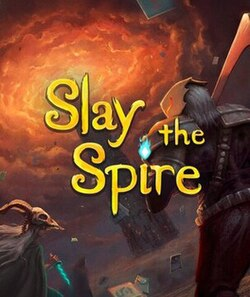

Slay The Spire

Slay the Spire is a 2019 roguelike deck-building game developed by the American indie studio Mega Crit. In tha game, the player attempts to ascend a spire of multiple floors created through procedural generation as one of four characters, battling enemies and bosses. Combat takes place through a collectible card game-based system, with the player gaining new cards as rewards from combat and other means, requiring the player to employ deck-building strategies to construct an effective deck to complete the climb.